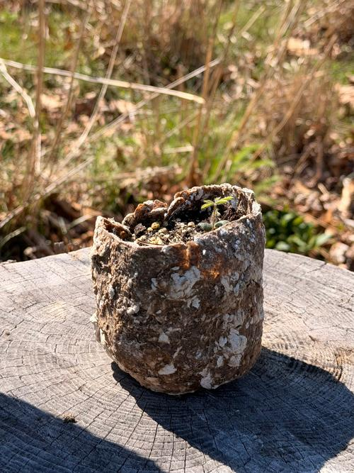
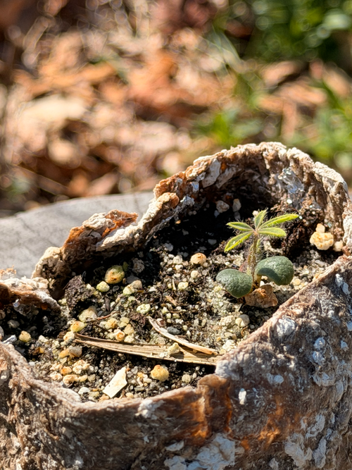
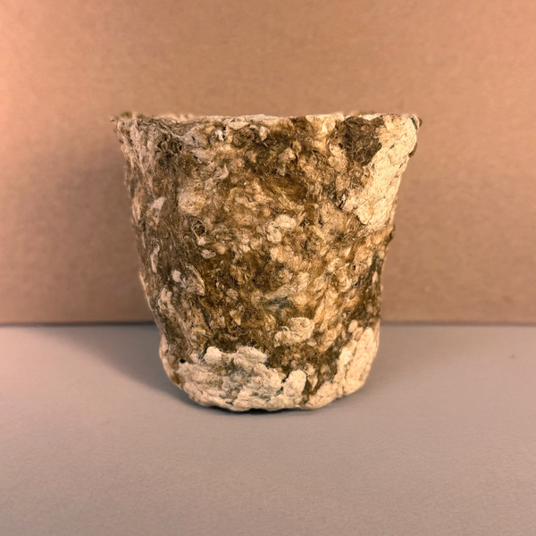

Sundial Lupine
As an effort to preserve the native sundial lupine (an at-risk species in the northeastern US), I developed biodegradable planting vessels for germination and use in RISD’s landscape test plot. The plant’s fragile taproot makes transplanting difficult, often leading to failure of establishment. These vessels allow the lupine to grow without being disturbed during transfer. The entire container is planted directly into the ground, where it breaks down and lets the root system extend naturally, reducing damage and improving survival rates.
The vessels are made from starch and recycled cardboard scraps sourced from RISD’s architecture department. The mixture is cooked and then cast into molds to form the final shape. As the plant is watered, moisture gradually softens and deforms the vessel, but not to a degree that compromises the plant’s stability or growth prior to planting.


